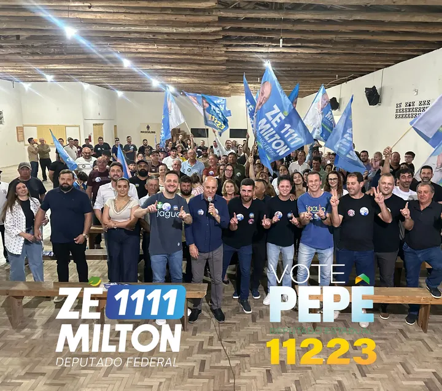

Sul Catarinense
AMUREL, AMREC e AMESC. É onde o mandato nasceu e onde estão as grandes obras: o ginásio de Sangão, os molhes de Laguna, a infraestrutura de Pescaria Brava.
Deputado estadual representa o Estado inteiro, não só a cidade onde nasceu. Mais de um terço de Santa Catarina recebeu recurso deste mandato, do extremo sul à serra, do Vale ao Oeste.

A maior parte fica no Sul, e isso é assumido: é onde estão a base, a história e as pautas que o mandato defende. Mas o recurso também saiu da região, porque prefeito de cidade pequena de qualquer canto do Estado bateu na porta e foi atendido: 71 das 114 cidades atendidas ficam fora da região.
AMUREL, AMREC e AMESC. É onde o mandato nasceu e onde estão as grandes obras: o ginásio de Sangão, os molhes de Laguna, a infraestrutura de Pescaria Brava.
Alto Vale, Grande Florianópolis, Serra, Meio-Oeste, Planalto Norte, Oeste e Litoral Norte. Cidades onde o mandato não tem histórico eleitoral e mesmo assim entregou.
Estas obras estão a duzentos, trezentos quilômetros de Tubarão. Todas resolvem o problema de alguém.
A rua coberta na área central, mais infraestrutura, pavimentação do perímetro urbano e o atendimento escolar.
Ali está a Creche Joelma de Bona, de R$ 2,3 milhões. Tem creche que é só prédio, e tem creche que tem nome, história e cara.
Pavimentação de vias municipais, saúde e exames de imagem numa cidade que triplica de tamanho no verão e precisa de estrutura o ano inteiro.
Pavimentação em paver e manutenção de vias municipais na segunda cidade mais populosa do Estado.
Ponte nova no município que abastece de hortaliça boa parte da Grande Florianópolis. Ponte cortada é safra parada.
Pavimentação de ruas do município, no coração do turismo de inverno catarinense, onde a estrada é a economia.
Santa Catarina tem 295 municípios. Estes 114 receberam emenda deste mandato entre 2023 e 2026, em ordem de valor. Se a sua cidade está aqui, o dinheiro passou por lá.
Os valores por cidade são a soma de todas as emendas do mandato ao município, em todas as modalidades, entre 2023 e 2026.
Os principais destinos do recurso nos três anos de mandato. Uma mesma emenda pode atender mais de uma frente: um ginásio escolar é esporte e educação ao mesmo tempo.
187 emendas em asfalto, drenagem, pontes, estradas do interior e infraestrutura viária. É a maior fatia porque é o que mais falta.
72 emendas em hospitais filantrópicos, custeio do SUS, exames de imagem, pronto atendimento e unidades básicas.
49 emendas em ginásios, quadras, praças, complexos esportivos e entidades culturais.
53 emendas em creches, CEIs, escolas, mobiliário, transporte escolar e projetos de robótica.
35 emendas em equoterapia, terapia ocupacional, salas sensoriais e APAEs de todo o Estado.
31 emendas em tratores, implementos agrícolas e estradas vicinais para as secretarias de agricultura de municípios pequenos.
Um vídeo por cidade, gravado onde a obra está. Toque para assistir no Instagram.
 Orleans
Orleans
 Jaguaruna
Jaguaruna
 Paulo Lopes
Paulo Lopes
 Nova Veneza
Nova Veneza
 Içara
Içara
 Braço do Norte
Braço do Norte
 Garopaba
Garopaba
 Gravatal
Gravatal
 Laguna
Laguna
 Pescaria Brava
Pescaria Brava
 Capivari de Baixo
Capivari de Baixo
Arraste para o lado. Cada vídeo abre no Instagram.

Foto 27set2026 @pepecollaco27/09/2026 A JAGUA REPRESENTANDO! 33923 Foto
25set2026
@pepecollaco25/09/2026
QUEM TÁ FECHADO COM O 11223?
427204
Foto
25set2026
@pepecollaco25/09/2026
QUEM TÁ FECHADO COM O 11223?
427204
 Reel
24set2026
@pepecollaco24/09/2026
QUINTOU NO RITMO DE QUEM FAZ E REPRESENTA!
36976
Reel
24set2026
@pepecollaco24/09/2026
QUINTOU NO RITMO DE QUEM FAZ E REPRESENTA!
36976
 Foto
24set2026
@pepecollaco24/09/2026
E aí, seu teclado te conhece?
7129
Foto
24set2026
@pepecollaco24/09/2026
E aí, seu teclado te conhece?
7129
 Foto
23set2026
@pepecollaco23/09/2026
FALTAM 11 DIAS!
44962
Foto
23set2026
@pepecollaco23/09/2026
FALTAM 11 DIAS!
44962
 Foto
22set2026
@pepecollaco22/09/2026
Dia 04/10, vote em quem FAZ e REPRESENTA!
20938
Foto
22set2026
@pepecollaco22/09/2026
Dia 04/10, vote em quem FAZ e REPRESENTA!
20938